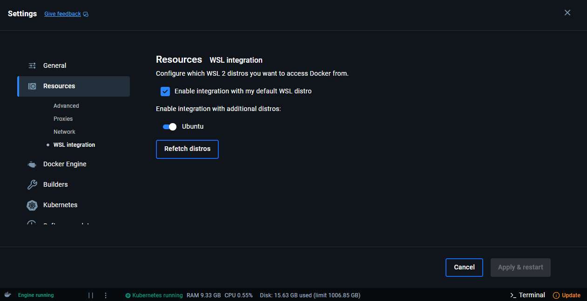

Local Deployment
1. Requirements
Before starting the deployment, ensure you have the following tools installed and configured:
| Tool | Description | Install Link |
|---|---|---|
| Docker Desktop | Containerization platform for local development. | Install Docker |
| Minikube | Run a local Kubernetes cluster. | Install Minikube |
| Skaffold | Automate the build and deployment cycle. | Install Skaffold |
| kubectl | Interact with the Kubernetes cluster. | Install kubectl |
| Helm | Manage and deploy Kubernetes packages. | Install Helm |
Docker Desktop Setup on Windows
If you're using Docker on Windows, follow these steps:
- Open Docker Desktop.
- Go to Settings > Resources > WSL Integration.
- Enable “Integration with my default WSL distro”.
- Check Ubuntu under "Enable integration with additional distros:"
- Click Apply and Restart to apply your changes.

2. Local Deployment
The scripts install_deps.sh and startup.sh in /deploy_scripts are designed for deployment in a CI/CD pipeline on a linux environment like CloudLab. These can be referenced here.
Step 1: Start Minikube
Open a new WSL terminal in the project root, and start the Kubernetes cluster using Minikube with Docker as the driver:
minikube start --driver=docker
Step 2: Enable the NGINX Ingress Addon
Enable the ingress addon to manage external traffic:
minikube addons enable ingress
This command installs the NGINX ingress controller that will handle routing HTTP requests into the Kubernetes cluster.
Step 3: Patch the Ingress Controller
Patch the ingress controller’s service to change its type to LoadBalancer so that it can be accessed externally:
kubectl patch svc ingress-nginx-controller
-n ingress-nginx
-p '{"spec": {"type": "LoadBalancer"}}'
Note
By default, the NGINX Ingress controller is exposed as a ClusterIP service, which is only reachable from within the cluster. Patching it to LoadBalancer changes the service type to expose a network-accessible IP address.
Step 4: Start the Minikube Tunnel
Run the tunnel to expose LoadBalancer services on your host network:
minikube tunnel
Warning
Keep this terminal open because the tunnel is active only while the terminal is running. You should create a new terminal for the next steps or run minikube tunnel in a standalone terminal.
Step 5: Deploy with Skaffold (Development Profile)
For local development, use the dev profile to set the hostname to localhost:
skaffold run -p dev